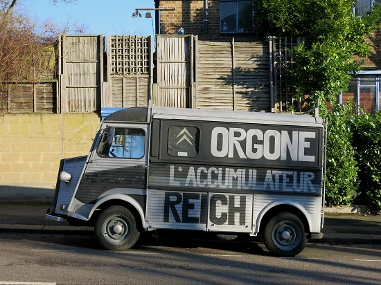

Wednesday, January the 18th, 2017
back to: title, date or indexes
What on earth is going on in Stroud Green? Mick Hartley spotted this mysterious vehicle.

For an account of a home-made Reichian orgone accumulator, see here.